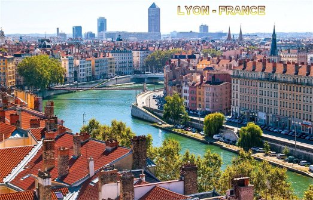
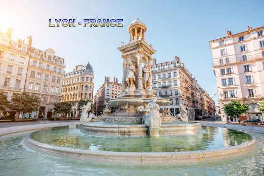
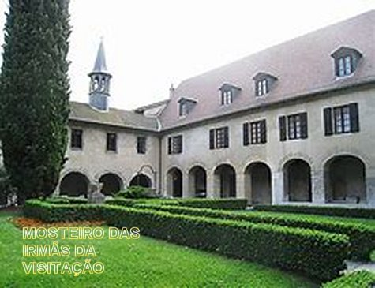
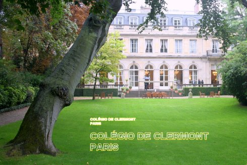
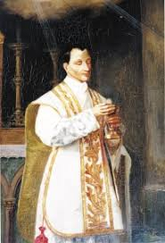
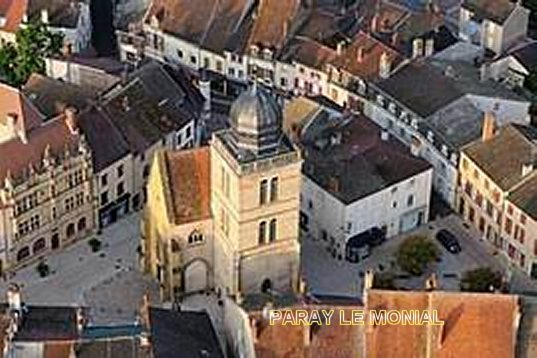

“A FAMÍLIA E OS ESTUDOS”

SEUS PAIS
Cláudio Colombière nasceu em Saint-Symphorien-d’Ozon próximo a Lion, sul da França, no dia 2 de fevereiro de 1641. Seus pais eram nobres, ricos e cristãos, tiveram sete filhos. Ele foi o terceiro filho de Bertrand la Colombière e Marguerite Coindat que nasceu naquele inverno gelado de 1641, para aquecer os corações da nobre família francesa. E sendo eles um casal católico praticante, interiormente sentiram-se conduzidos pelo ESPÍRITO SANTO a desejar que aquele querido filho fosse um sacerdote a serviço do SENHOR DEUS. E na verdade dos sete filhos do casal, quatro se tornaram sacerdotes e religiosos cristãos. Todavia, Claudio na idade de 6 a 8 anos, não conhecia e nem tinha meios de conhecer as realidades da vida, e por isso, não simpatizava muito com a idéia e o desejo de seus pais em transformá-lo num sacerdote.
PRIMEIRA EUCARISTIA

Na continuidade, seus pais sempre desejando o melhor para os filhos, conseguiram em Vienne, com Padres Jesuítas que trabalhavam na região, que ministrassem aulas de gramática e preparassem o filho. E exatamente, foi a partir desta oportunidade que ele começou a simpatizar com a idéia de ser um religioso, e assim, logo revelou o seu desejo de entrar num Seminário Jesuíta. Três anos depois, Claudio mudou-se para Lyon, a fim de estudar Humanidades, no Colégio da Companhia de Jesus. Naquele ambiente tranquilo, cercado de muito companheirismo e desejo sincero de alcançar uma boa formação, verdadeiramente foi o impulso derradeiro que agiu nele, para sedimentar em seu coração um real desejo de ser um “Amigo do SENHOR”, porque interiormente já brilhava em seu espírito os traços mais vivos de seu amor a JESUS e a SANTÍSSIMA EUCARISTIA. Assim, decididamente entrou no Noviciado da Companhia de JESUS em 1658, com 17 anos de idade, com o desejo de ser um sacerdote.
O SEGREDO DA ALMA
Mais tarde revelou aos seus pais
o “segredo” da sua decisão: contou que foi verdadeiramente em Lion
que ele firmou a sua idéia, apoiada num sentimento que se desabrochou com plena
lucidez e o lançou ao encontro dos jesuítas onde estudou. Pois foi justamente
observando o exemplo de vida e a sabedoria dos jesuítas, 
MOSTEIRO DA VISITAÇÃO
Por outro lado, também foi em Lion onde morou durante cinco anos, que tomou conhecimento e entrou em contato com membros da Obra de São Francisco Sales, que lhe causou admiração, tendo sido recebido pelas Irmãs da Visitação de Bellecour. Na sequência dos meses, teve a oportunidade de visitá-los diversas vezes, a fim de se colocar a disposição do Mosteiro, cuja Superiora na época era a Madre de Saumaise.
Nos estudos, dois anos depois, ele pronunciou os primeiros votos, e como havia concluído o Curso de Filosofia, assumiu o magistério no Colégio da Companhia de Jesus, procedimento que era estabelecido como fase importante e determinante, estabelecido pela própria Ordem Religiosa, a fim de exercitar os reais conhecimentos dos Seminaristas, de acordo com os Estatutos, antes de continuar os estudos para o sacerdócio.
COLÉGIO DE CLERMONT

Este acontecimento constituiu uma grande oportunidade para ele, porque em virtude da sua notável capacidade intelectual, pois tinha especial habilidade para escrever e fazer os seus próprios sermões, em 1666 o Superior Geral decidiu enviá-lo para estudar teologia no Colégio de Clermont, em Paris. Lá ele desenvolveu a sua cultura e acionou todas as suas habilidades, revelando-se num notável orador e admirável professor de retórica.
Estas qualidades unidas ao seu precioso caráter no exercício de uma ilibada existência religiosa lhe propiciaram o cargo de preceptor dos filhos do senhor Colbert, que era um importante Ministro do Tesouro do Rei da França, Luis XIV. E por essa razão, teve que frequentar o ambiente da corte francesa, onde granjeou muitos amigos, dando mostras de seu talento e da sua admirável educação, sobretudo evidenciando em plenitude, a firmeza de seus princípios e das suas magníficas virtudes.
AS SAGRADAS ORDENS - SACERDOTE DO ALTÍSSIMO
E assim, pela sequência de seus
estudos de filosofia e teologia, no ano de 1669, foi ordenado sacerdote jesuíta,
recebendo as sagradas ordens. A seguir, viveu um 
Em Lyon, na Casa de São José, foi o local onde o Padre Claudio de La Colombière burilou as suas qualidades no mencionado período, aproveitando para fazer um voto particular de perfeito cumprimento dos Estatutos da Ordem Religiosa, com alegria e santa obediência. Ele foi muito bem, realizando todas as fazes da Terceira Provação com pleno louvor. Na verdade, antes de concluir o tempo regulamentar de cinco anos, foi aprovado e convidado a realizar os Votos Perpétuos com a idade de 34 anos, no dia 2 de Fevereiro de 1675. E nesta mesma oportunidade, recebeu da Administração Jesuíta, o encargo de ser o Superior da Casa dos Jesuítas em Paray-le-Monial, no sul da França.
UM PERFEITO CONFESSOR
Ele conhecia pouco sobre Paray-le-Monial, mas as notícias que lhe foram transmitidas pelos seus Superiores, revelavam um assunto muito especial, pois se tratava das visões de uma religiosa Irmã Margarida Maria de 28 anos de idade. E então, o Padre Cláudio recebeu como parte da sua missão, ser também confessor do Mosteiro da Visitação, onde vivia a mencionada religiosa Margarida Maria Alacoque, que possuía um grande poder espiritual. A santidade e a sabedoria manifestada pela jovem influenciavam a todos que dela se aproximavam, sobretudo porque ela afirmava receber do próprio JESUS preciosas revelações sobre a Devoção ao SAGRADO CORAÇÃO DE JESUS, que ela mesma divulgava.
O NOVO SUPERIOR JESUÍTA
